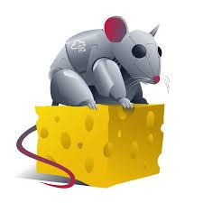

Projects
Here are some of the projects I've worked on in the field of cybersecurity:
Gerrit Code Review

This project demonstrates the implementation of a Gerrit review workflow for secure software engineering.
View GitHubChronicle SIEM
I will use the Chronicle SIEM to invesitgate a security incident involving a phishing scenario.
View GitHubSpotbugs Static Analysis
This project focuses on analyzing the OWASP WebGoat application to identify and remediate security vulnerabilities using SpotBugs.
View GitHubMetasploit SSH Exploit
I will be utilizing metasploit to compromise the login credentials of an account on a Linux Mint VM.
View GitHubSplunk Lab

I will create an account, ingest a new data set, analyze the data utilizing queries and search filters, and undergoing a short security practice scenario.
View GitHubTryHackMe Cheese CTF
I am going to demonstrate how to complete tryhackme's Cheese CTF. I will enumerate, exploit, and gain access to root files.
View GitHubTools & Technologies
Here are some of the tools and technologies I frequently use in my projects:
Network protocol analyzer for troubleshooting and analysis.
Penetration testing framework for exploiting vulnerabilities.
Web vulnerability scanner for penetration testing.
Log analysis and monitoring tool for cybersecurity insights.
Used for scripting, automation, and cybersecurity tools.
Containerization platform for isolated environments.